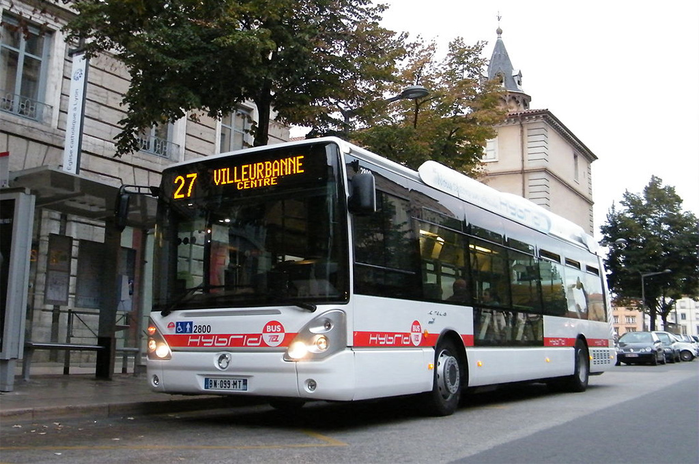
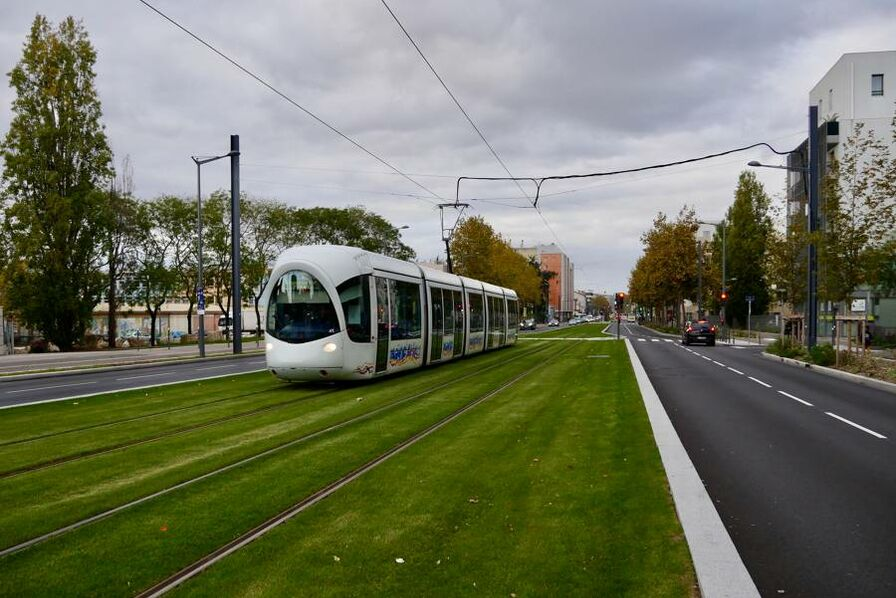
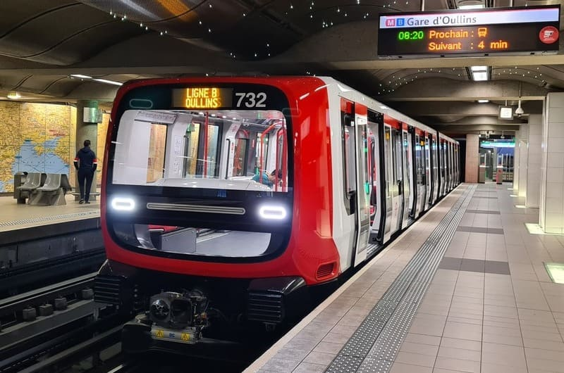
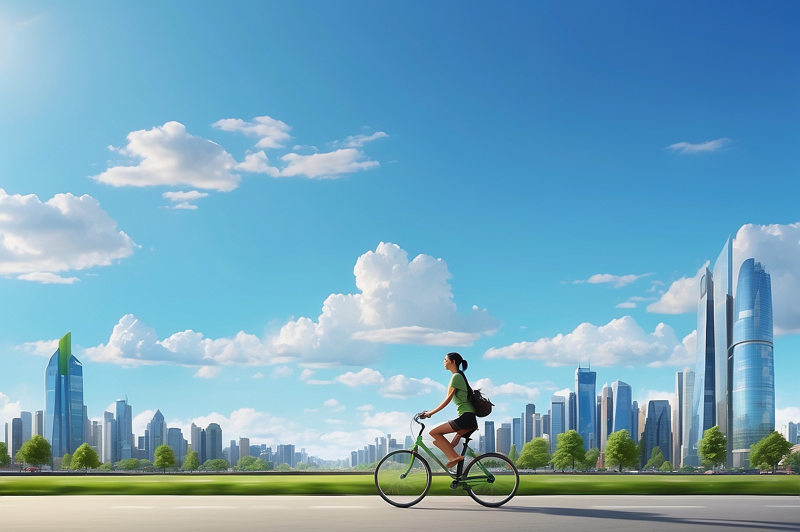
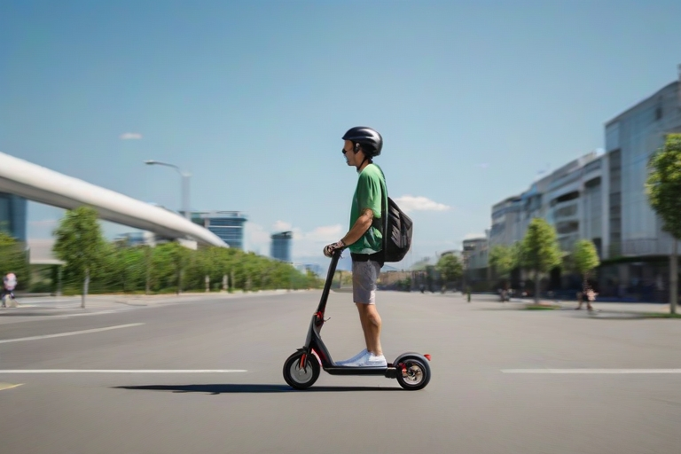
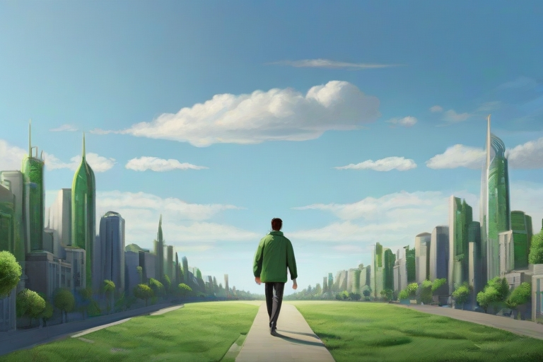

Les contraintes liées à l'utilisation de la voiture
La voiture est un moyen pratique et rapide pour se rendre à l'école. Cependant elle présente aussi des inconvénients allant du coût de l'entretien de la voiture aux impacts environnementaux. La voiture peut aussi être source de frustration dans certaines situations. Voici quelques désavantages quant à son utilisation :
Coûteux
Une utilisation journalière de la voiture requiert un budget assez élevé. L'image ci-dessous donne un ordre d'idée :
Perte de temps
Les places de parking sont limitées sur les campus, en chercher une pour se garer peut faire perdre beaucoup de temps et être source de frustration
Congestion routière
L'utilisation excessive de la voiture augmente le nombre de véhicules sur les routes et donc les risques d'accidents, engendre plus de bouchons et ainsi plus de stress chez les conducteurs
Pollution
L'utilisation de la voiture contribue au changement climatique, à la pollution atmosphérique et sonore et donc à la qualité de vie des résidents ce qui peut causer des effets néfastes sur leur santé notamment aux personnes les plus fragiles
Il est important d'agir face aux enjeux pressants du dérèglement climatique et à la pollution liée à une utilisation intensive de la voiture. C'est pourquoi nous vous proposons dans cette partie des moyens de déplacement plus respectueux de l'environnement.
Les solutions alternatives
Bus
Tramway
Métro
Les transports en commun vous permettront de vous déplacer dans toute la ville au prix d'un abonnement. Pour plus d'informations, nous vous invitons à consulter le site TCL.
Vélo
Les campus sont équipés de plusieurs abris à vélos, en plus de vous faire faire du sport, nous n'aurez plus à vous inquiéter des embouteillages ainsi qu'à chercher des places de parking. La ville de Lyon met à disposition des vélos en libre service au nom de Vélo'v disponible 24h sur 24 et 7 jours sur 7. Veuillez consulter leur site pour plus d'informations.
Trottinette
Des trottinettes électriques en libre service ont aussi été mises à disposition dans la ville. Elles peuvent être utilisées grâce aux applications Dott et Tier que vous pouvez installer directement depuis votre smartphone.
Marcher
Si vous habitez relativement proche de votre école, ne prenez pas la peine d'utiliser votre voiture, vous perdrez encore plus de temps. Vous aurez l'occasion de faire votre sport quotidien en marchant. Si vous habitez un peu plus loin vous pouvez aussi combiner la marche avec les transports en commun. Vous trouverez sur ce site les différents effets bénéfiques liés à la marche.